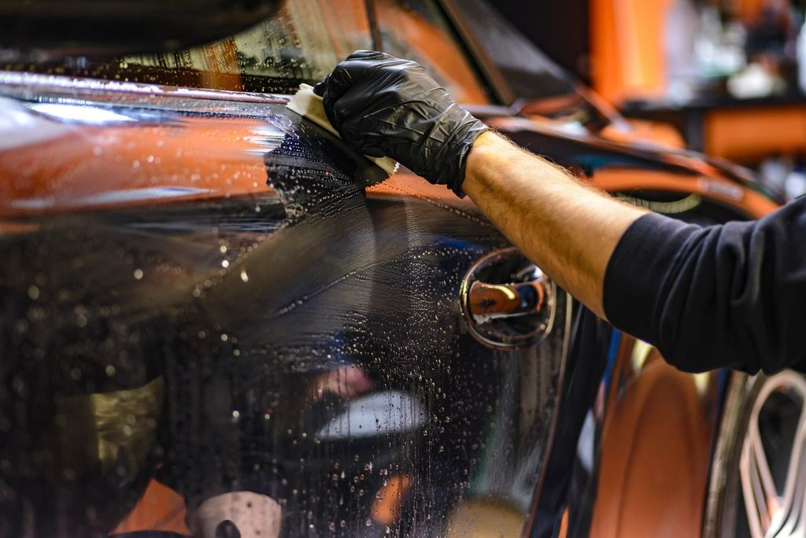
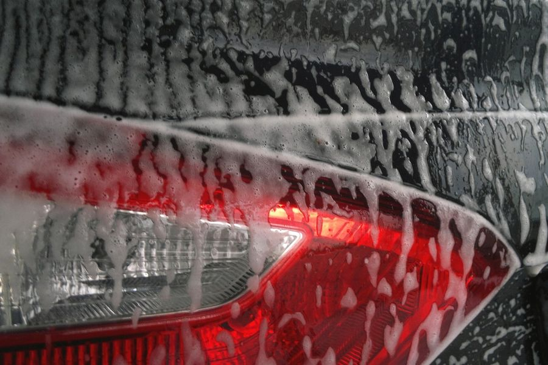

İç dış yıkama
Köpüklü dış yıkama ve iç süpürme: düzenli bakımın temeli. Günlük kullanımın tozunu, çamurunu ve iç mekândaki kırıntıları alır.
Teklife ekleOto Yıkama & Kuaför · İçerenköy, Ataşehir
İç dış yıkamadan pasta cilaya, aracınızın her yüzeyi için bir garaj. İstediğiniz işlemleri seçin, teklifinizi WhatsApp'tan isteyin.
Parlaklık bandını sürmek için aracın üzerinde parmağınızı ya da imlecinizi gezdirin.
Bir oto kuaförde en sık istenen işlemler aşağıda. Aracınıza hangisinin gerektiğinden emin değilseniz durumu yazın; sorun, bilgi verelim.
Köpüklü dış yıkama ve iç süpürme: düzenli bakımın temeli. Günlük kullanımın tozunu, çamurunu ve iç mekândaki kırıntıları alır.
Teklife ekleKoltuk, döşeme, tavan, torpido ve kapı içleri tek tek ele alınır. Havalandırma ızgaraları ve dikiş aralarındaki toz da bu işin parçası.
Teklife ekleLekeli ya da koku tutmuş koltuklar için derinlemesine yıkama. Kumaş ve deri koltuklarda yöntem farklıdır; aracınızın döşemesini belirtin.
Teklife ekleMotor bölmesindeki yağ ve toz birikimi için kontrollü temizlik. Bu işte elektrik aksamını korumak ve bol su yerine düşük basınçla çalışmak önemlidir.
Teklife ekleGüneşte görünen ince çizgiler, hare ve matlık için boya düzeltme ve parlatma. Her araca gerekmez; boyanın durumuna bakılarak karar verilir.
Teklife ekleParlatılmış boyanın üzerine uygulanan koruma katmanı; yüzeye kayganlık ve su itici bir his verir. Ürün ve uygulama seçeneklerini sorun.
Teklife ekleListede olmayan bir işlem mi arıyorsunuz? WhatsApp'tan sorun, bilgi verelim.
Türkiye'de “oto kuaför”, aracın yalnızca yıkanmadığı; iç döşemesinden boyasına kadar ayrıntılı bakımının yapıldığı işletmeler için kullanılan bir ad. Dünyada aynı işin karşılığı “detailing”.
Elit Garaj Detailing de adında ikisini birden taşıyor: kısa bir iç dış yıkamadan, sabır isteyen boya düzeltmeye kadar uzanan bir yelpaze.

Temsili görsel
Temsili görselBoyaya en çok zarar veren şeyler genellikle sıradan şeylerdir. Neyin ne yaptığını bilmek, bir sonraki yıkamaya kadar aracı korumanın en kolay yolu.
Ne yapar: Asidik yapısı, özellikle sıcak havada verniği lekeleyebilir.
Ne yapmalı: Kuru bezle ovmayın. Bol suyla ıslatıp yumuşamasını bekleyin, sonra nazikçe kaldırın.
Ne yapar: Ağaç altında damla damla birikir, güneşte sertleşip yüzeye yapışır.
Ne yapmalı: Tırnakla kazımayın. Uygun bir reçine çözücüyle yumuşatılarak alınması gerekir.
Ne yapar: Çamurluk arkası ve marşpiyellerde küçük siyah noktalar olarak görülür.
Ne yapmalı: Normal şampuanla çıkmaz; katran çözücü gerekir. Ovalayarak çıkarmaya çalışmak çizik bırakabilir.
Ne yapar: Güneşte kuruyan su damlaları, içindeki mineralleri yüzeyde halka halka bırakır.
Ne yapmalı: Gölgede ve soğuk yüzeyde yıkayın, beklemeden kurulayın.
Ne yapar: Yollara atılan tuz, alt takımda ve jant aralarında birikip korozyonu hızlandırabilir.
Ne yapmalı: Tuzlu yollardan sonra alt kısımları ve jantları bol suyla durulatmak iyi bir alışkanlıktır.
Detaylı temizliğin hangi sırayla yapıldığını süreç sayfasında adım adım görebilirsiniz.
Showroomdaki araçların yanındaki özellik föyleri gibi: hangi pakette ne olduğunu tek bakışta görün. Tam tablo, paket bulucu ve boya kesiti paketler sayfasında.
| İşlem | Temel Yıkama | Detaylı İç-Dış | Pasta Cila | Seramik Koruma |
|---|---|---|---|---|
| Köpüklü dış yıkama | var | var | var | var |
| İç süpürme | var | var | var | var |
| Koltuk ve döşeme | yok | var | var | var |
| Pasta | yok | yok | var | var |
| Cila ve parlatma | yok | yok | var | var |
| Seramik koruma | yok | yok | yok | var |
Not: Paket adları ve içerikleri örnek olarak hazırlandı; fiyat bilgisi yoktur. Paket içerikleri işletmeye sorulmalıdır.
Fiyat, aracın boyutuna ve durumuna göre değişir. Araç tipinize dokunun; teklif formu o seçimle açılsın.
Google'da 4,8 puan, 350 yorum.
Yorumları Google'da okuyunHer gün 09:00–21:00
| Pazartesi | 09:00–21:00 |
|---|---|
| Salı | 09:00–21:00 |
| Çarşamba | 09:00–21:00 |
| Perşembe | 09:00–21:00 |
| Cuma | 09:00–21:00 |
| Cumartesi | 09:00–21:00 |
| Pazar | 09:00–21:00 |
İçerenköy, Gökdeniz Sk., 34752 Ataşehir/İstanbul
İç dış yıkama genellikle kısa sürer. Detaylı iç temizlik, pasta cila ve koruma gibi işlemlerin süresi aracın durumuna göre değişir; aracınız için süreyi WhatsApp'tan sorun.
Evet, WhatsApp'tan gün ve saat yazmanız yeterli. Teklif formu bu mesajı sizin için hazırlar.
Fiyat; aracın boyutuna, iç ve dış durumuna ve seçilen işlemlere göre değişir. Aracınızı ve istediğiniz işlemleri gönderin, işletme size bilgi versin.
Hayır. Boyada güneş altında görünen ince çizgiler, hare ya da matlık yoksa düzenli yıkama ve bir koruma katmanı yeterli olabilir. Karar vermeden önce aracı gösterip sorun.
Evet. Yollardaki tuz ve çamur özellikle alt takımda ve jantlarda birikir. Kış aylarında düzenli yıkama, bu birikimin aracın üzerinde uzun süre kalmasını önler.
Elit Garaj Detailing haftanın her günü 09:00–21:00 arası açık. Gelmeden önce yazarsanız uygun saati birlikte planlayabilirsiniz.